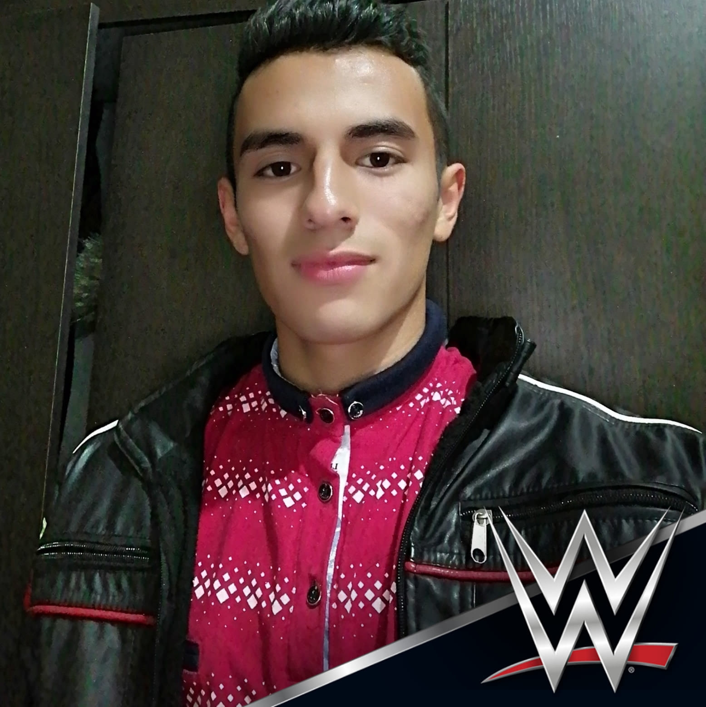

Jaider Rodriguez
Desarrollador web
Yo soy jaider Andres Rodriguez Rodriguez. Soy un Aprendiz del sena que estudia desarrollo web.
Desde que estoy estudiando desarrollo web, me ha parecido fascinante lo que se puede realizar en los lenguajes de programación. Soy una persona que le gusta trabajar y esforzarse.
JavaScript

JavaScript es un lenguaje de programación o de secuencias de comandos que te permite implementar funciones complejas en páginas web
Natupoints
Natupoints es un proyecto, el cual busca hacer conocer todas las zonas verdes de Soacha
Herencias
La herencia permite que una clase tenga el mismo comportamiento que otra clase y amplíe o adapte ese comportamiento para brindar una acción especial para necesidades específicas
Manuales
Los manuales son instructivos del cómo realizar alguna acción o proceso. En este caso se va a explicar el manual del usuario y del cliente